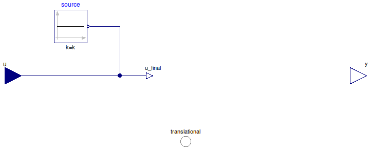

Table of Contents
- User's Guide
- Blocks
- Conditions
- Assemblies
- Regions
- Subregions
- Connectors
- Characteristics
- Units
- Quantities
- BaseClasses
Download
- Latest: FCSys-2.0.zip (**Please check back soon or contact kdavies4 at gmail.com.)

| Name | Description |
|---|---|
| Partial model for a translational condition | |
| ConditionType | Types of conditions |
type ConditionType = enumeration(
Velocity "Specify velocity (measure force)",
Custom "Custom") "Types of conditions";
 FCSys.Conditions.ByConnector.Translational.Component.BaseClasses.PartialCondition
FCSys.Conditions.ByConnector.Translational.Component.BaseClasses.PartialCondition
| Type | Name | Default | Description |
|---|---|---|---|
| Axis | axis | Axis.x | Axis |
| ConditionType | conditionType | Type of condition | |
| Specification | |||
| Boolean | internal | true | Use internal specification |
| RealExpression | source | redeclare Modelica.Blocks.So… | Source of internal specification |
| Measurement | |||
| RealOutput | y | Measurement expression | |
| Type | Name | Description |
|---|---|---|
| input RealInput | u | Value of specified condition |
| Translational | translational | Connector for advection or diffusion of translational momentum |
| Measurement | ||
| output RealOutput | y | Measurement expression |
partial model PartialCondition "Partial model for a translational condition" extends FCSys.BaseClasses.Icons.Conditions.Single; parameter Axis axis=Axis.x "Axis"; parameter Boolean internal=true "Use internal specification"; replaceable Modelica.Blocks.Sources.RealExpression source if internal constrainedby Modelica.Blocks.Interfaces.SO "Source of internal specification"; Connectors.RealInput u if not internal "Value of specified condition"; Connectors.RealOutput y "Measurement expression"; Connectors.Translational translational(final n_trans=n_trans) "Connector for advection or diffusion of translational momentum"; constant ConditionType conditionType "Type of condition"; // Note: This is included so that the type of condition is recorded with // the results. protected outer parameter Integer n_trans "Number of components of translational momentum"; outer parameter Integer cartTrans[:] "Cartesian-axis indices of the components of translational momentum"; outer parameter Integer transCart[Axis] "Translational-momentum-component indices of the Cartesian axes"; Connectors.RealOutputInternal u_final "Final value of specified condition"; equation for i in 1:n_trans loop if cartTrans[i] <> axis then translational.mPhidot[i] = 0 "Not force in the other directions"; end if; end for; connect(source.y, u_final); connect(u, u_final); end PartialCondition;